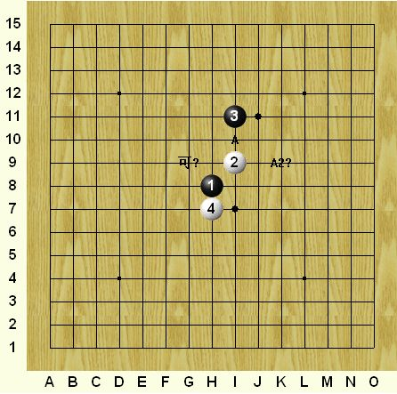
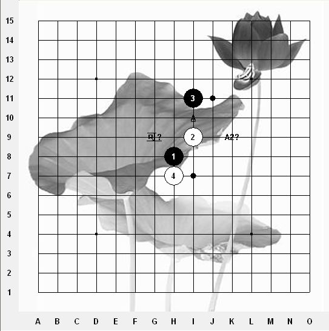

[互动棋谱]打谱软件发布
首页
茗弈阁
#1 [互动棋谱]打谱软件发布 作者：二十七刀 发表时间：2009-3-5 8:59:04
renlib打谱软件发布 renlib4.0.rar下载
renlib4.0.rar下载［本站用户 刀魂 于 2009-3-5 9:19:33 花5个金币送您鲜花一朵］
［ 茗弈小刀 于 2009-3-5 10:04:25 时奖励此帖[金币加 20 威望加1］
［本站用户 逆刃 于 2009-3-5 12:25:19 花5个金币送您鲜花一朵］
［此帖子已被 茗弈小刀 在 2009-4-22 19:42:46 编辑过］
#2 Re:打谱软件发布 作者：刀魂 发表时间：2009-3-5 9:08:57
刚刚下下来了，可是打不开以前的棋谱哟。。。敢问如何设置才能打开以前的 lib 棋谱捏？？？
#3 Re:打谱软件发布 作者：二十七刀 发表时间：2009-3-5 9:37:19
详见下帖如何使用打谱软件rar下载查看
ShowPost.asp?ThreadID=5645
#4 Re:打谱软件发布 作者：南京小飞机 发表时间：2009-3-5 12:50:42
打谱软件背景怎么设置啊,我下了点格式相同的图，选择作为背景后是乱码
#5 Re:打谱软件发布 作者：就是爱玩 发表时间：2009-3-5 13:37:32
我也遇到了楼上的情况
#6 Re:打谱软件发布 作者：二十七刀 发表时间：2009-3-5 16:28:27
不会乱码,进去点BoardBitmap就可以了,两种图片可互换
#7 Re:打谱软件发布 作者：南京小飞机 发表时间：2009-3-5 16:36:49
我的意思是 除了这两图片换其他的怎么换？
#8 Re:打谱软件发布 作者：闫荣辉 发表时间：2009-3-5 16:38:19
我下了，怎么是3.5？？？
renlib4.0.rar.rar
#9 Re:打谱软件发布 作者：闫荣辉 发表时间：2009-3-5 16:49:56
我上官网也没看到有4.0。http://www.renju.se/renlib/
#10 Re:打谱软件发布 作者：二十七刀 发表时间：2009-3-5 16:51:07
换其它要涉及到版权问题,
#11 Re:打谱软件发布 作者：就是爱玩 发表时间：2009-3-5 17:05:30
刚才仔细看看，发现版本确实为renlib3.5.1,楼主是否发错了？
#12 Re:打谱软件发布 作者：闫荣辉 发表时间：2009-3-5 17:12:23
不是发错啦！最新是3.7的，就没4.0的。可能是写错啦！不过没事，楼主教的这个还有人不知道！而且看上去也很美！
#13 Re:打谱软件发布 作者：二十七刀 发表时间：2009-3-5 20:36:35
3.6 3.7 3.8 等都是假冒
#14 Re:Re:打谱软件发布 作者：有志青年 发表时间：2009-3-5 21:48:34
引用：
原文由 二十七刀 发表于 2009-3-5 20:36:35 :
3.6 3.7 3.8 等都是假冒
呵呵，3.7是作者发布的，怎么会是假冒的呢？3.8倒是没有看到，目前。［本站用户 二十七刀 于 2009-3-6 14:23:17 花15个金币砸了你1个臭鸡蛋]
［本站用户 二十七刀 于 2009-3-19 16:19:04 花15个金币砸了你1个臭鸡蛋]
#15 Re:打谱软件发布 作者：香雪美景 发表时间：2009-3-6 13:40:25
 我不会啊！！！
我不会啊！！！
#16 Re:打谱软件发布 作者：启蒙 发表时间：2009-3-10 18:34:27
LZ你好。。刚才我去http://www.renju.se/renlib/看了一下
最新版还是3.7啊，这个4.0怎么。。